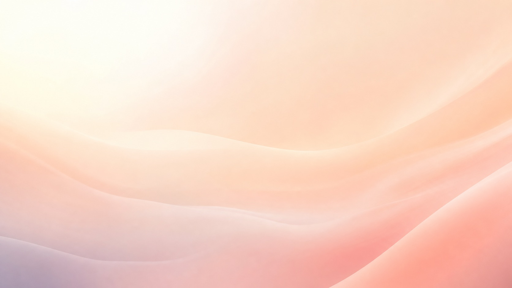

Wallpapers
壁纸级背景
让录屏成为桌面美学
8 张内置壁纸是 GPT-image 生成的 macOS 级渐变——不是程序化渐变，而是真正可以当桌面壁纸的质感。



一键起录、本地秒存、自动运镜、macOS 风壁纸背景。
为自媒体创作者与开发者打造的 Chrome 网页录屏插件。
录制只是开始。花录在浏览器里完成了从采集、剪辑到电影感后期的完整工作流。
8 张内置壁纸是 GPT-image 生成的 macOS 级渐变——不是程序化渐变，而是真正可以当桌面壁纸的质感。

花录录制的是干净的网页画面，同时隐形追踪光标与点击。后期合成时，自动生成平滑的推拉运镜，让观众的视线始终聚焦在你点击的位置。
同一段录制素材，一键切换画布比例，直接出横屏、竖屏、方形版本。
不再需要昂贵的 Screen Studio 或复杂的后期软件。一键起录，自动运镜聚焦重点，摄像头画中画带美颜，竖屏比例直接发短视频平台。把时间花在内容上，而不是后期上。
录制产品 Demo 发给团队和客户，自动运镜让每一步操作都清晰可见。完全本地运行，代码不会上传到任何服务器。开源 MIT 协议，可以自由修改和集成。
Chrome 打开 chrome://extensions，开启「开发者模式」，点「加载已解压的扩展程序」选择花录文件夹。建议把图标固定到工具栏。
在任意网页上点花录图标 → 点「开始录制」，或直接按 Alt+Shift+R。可选「同时录制摄像头」「录制麦克风」「平滑光标」。录制全程画面干净，不会有任何控制条被录进去。
停止后自动打开编辑器：调背景、运镜、点击波纹、摄像头小窗、音量；在胶片轨道上删片段、变速。选好画布比例和格式（MP4 / WebM / GIF），点「导出」即可。
不登录、不上传、不追踪。所有数据存储在浏览器本地 IndexedDB。
免费、开源、本地运行。现在就把花录加入你的浏览器。